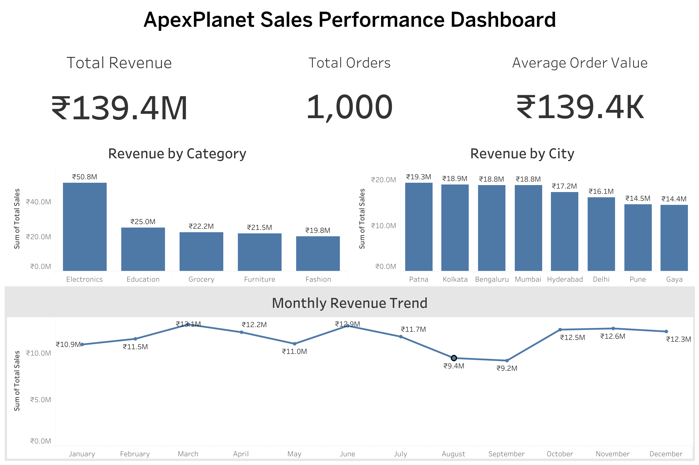
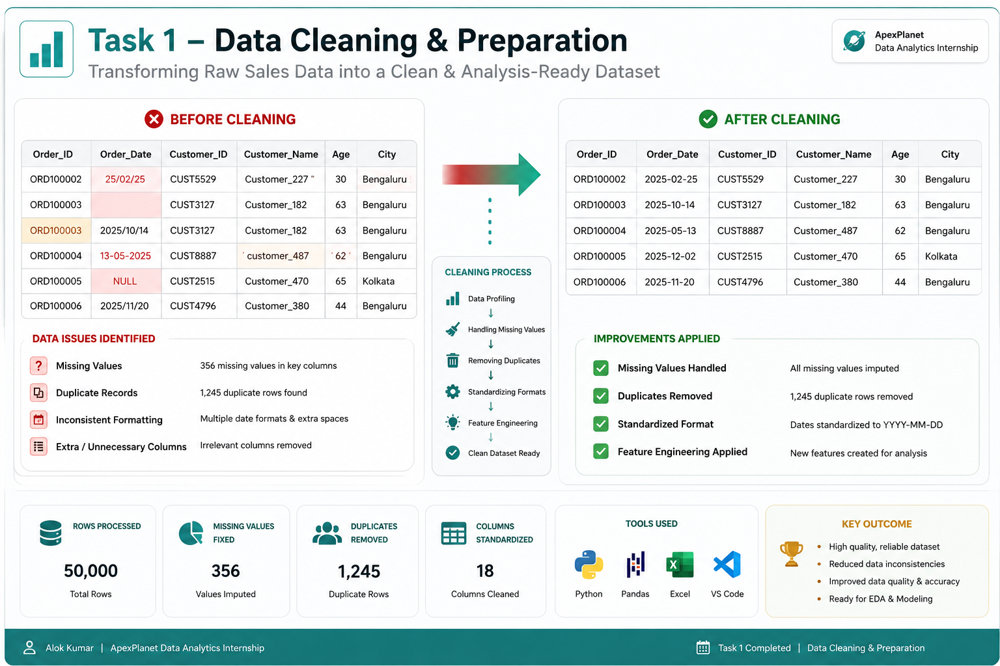
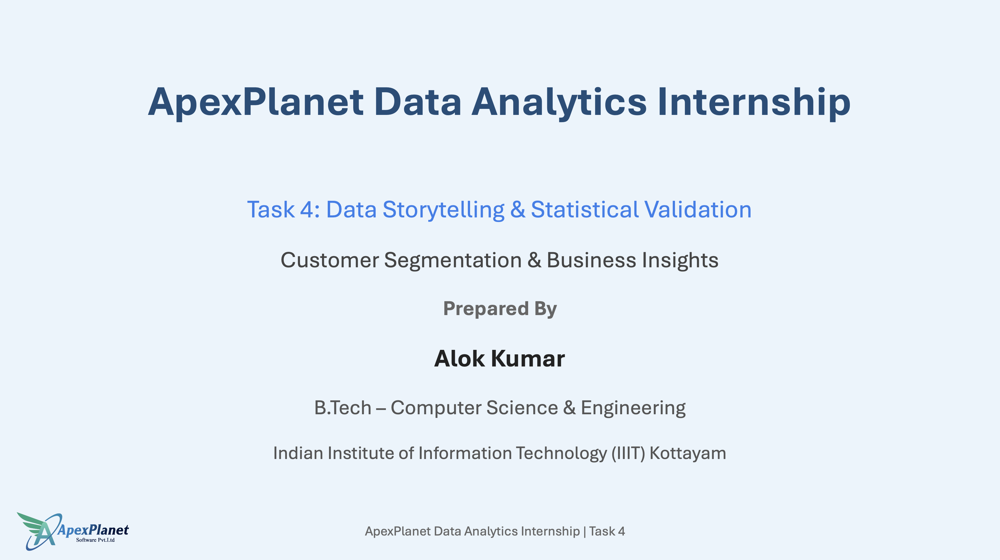
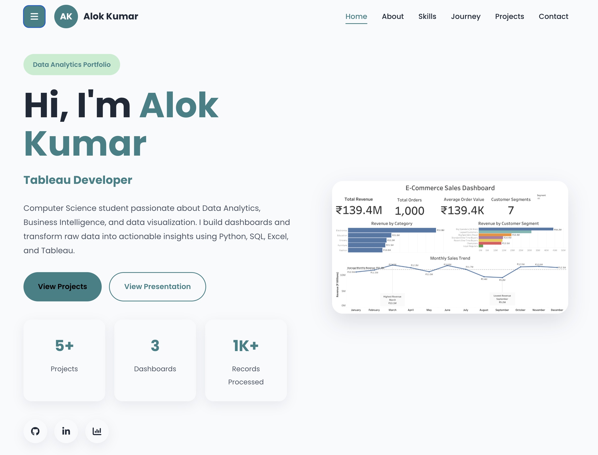
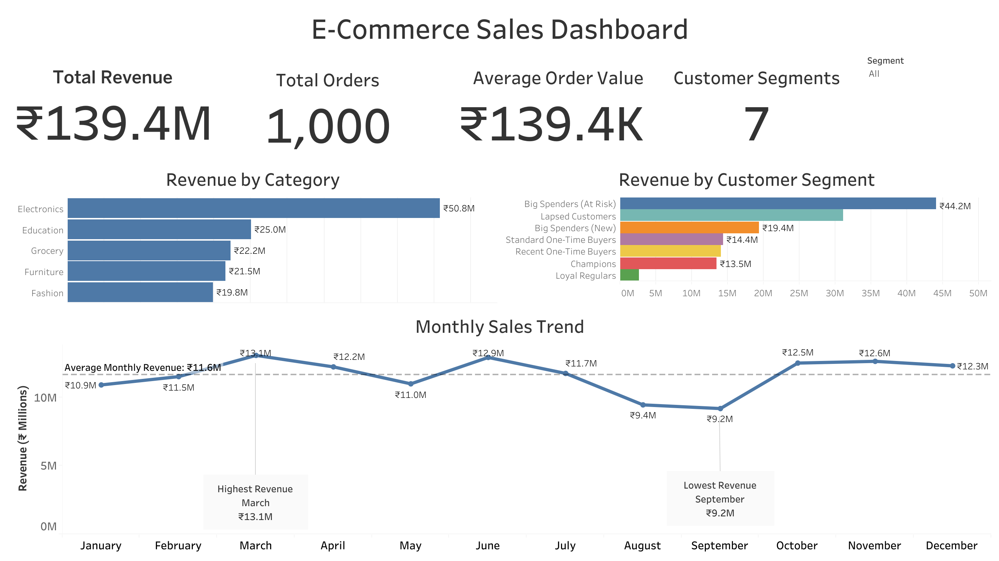

Data Analytics Portfolio
Hi, I'm Alok Kumar
Computer Science student passionate about Data Analytics, Business Intelligence, and data visualization. I build dashboards and transform raw data into actionable insights using Python, SQL, Excel, and Tableau.
3
Dashboards1K+
Records Processed
About Me
Turning Data Into Insights
Computer Science student with a strong interest in Data Analytics, Business Intelligence, and data visualization. I enjoy solving real-world problems using data-driven solutions.
Who I Am
I'm pursuing a B.Tech in Computer Science & Engineering at IIIT Kottayam. During my ApexPlanet Data Analytics Internship, I worked on data cleaning, exploratory analysis, SQL, Tableau dashboards, customer segmentation, and statistical validation.
My goal is to build analytical solutions that transform raw data into meaningful insights and support smarter business decisions.
Education
B.Tech CSE
IIIT KottayamExperience
Data Analytics Intern
ApexPlanetProjects
5+
Analytics ProjectsCore Skills
Python • SQL
Tableau • Excel
Highlights
Portfolio at a Glance
0
Projects
0
Dashboards
0
Records Analyzed
0
Tech Stack
Skills
Technical Skills
Technologies and tools I use to analyze data, create dashboards, and deliver data-driven business insights.
Python
Data Analysis & Automation
SQL
Database Querying & Analysis
Excel
Data Analysis & Reporting
Tableau
Interactive Dashboards
Pandas
Data Cleaning & Transformation
NumPy
Numerical Computing
SciPy
Statistical Analysis
Git & GitHub
Version Control
Journey
Internship Timeline
A summary of my ApexPlanet Data Analytics Internship, highlighting the skills, tools, and practical experience gained through each project.
Task 1
Data Cleaning & Preparation
Cleaned datasets, handled missing values, removed duplicates, and prepared structured data for analysis.
Task 2
Exploratory Data Analysis
Explored datasets using Python and SQL while creating meaningful visualizations and interactive dashboards.
Task 3
Customer Segmentation
Built customer segments and KPI dashboards to support data-driven business decisions.
Task 4
Business Storytelling
Applied hypothesis testing and transformed analytical findings into actionable business recommendations.
Task 5
Capstone Integration & Portfolio Finalization
Consolidated the complete internship work into a professional portfolio, integrating projects, dashboards, presentation materials, resume, and professional profiles into a responsive website.
Projects
Featured Data Analytics Projects
A selection of internship projects demonstrating practical experience in data cleaning, exploratory analysis, visualization, business intelligence, and statistical analysis.

Task 1
Data Cleaning & Preparation
Cleaned and transformed raw sales data by handling missing values, removing duplicates, validating records, and performing feature engineering.
View on GitHub
Task 2
Exploratory Data Analysis
Explored datasets using Python and SQL while building interactive Tableau dashboards for business insights.
View on GitHub
Task 3
Customer Segmentation
Developed customer segmentation models and KPI dashboards to support data-driven business decisions.
View on GitHub
Task 4
Business Storytelling
Applied hypothesis testing and transformed analytical findings into actionable business recommendations through data storytelling.
View on GitHub
Task 5
Capstone Portfolio & Website
Integrated all five internship tasks into a professional portfolio website with project showcases, dashboards, presentation materials, resume, and interactive navigation.
View Project
Data Visualization
Interactive Tableau Dashboards
Interactive dashboards designed in Tableau to transform raw data into meaningful business insights and support data-driven decisions.

Sales Analysis
Visualized revenue trends, sales performance, and business growth.
Customer Insights
Analyzed customer behavior, segmentation, and purchasing patterns.
Business KPIs
Tracked key performance indicators using interactive dashboards.
Achievements
Certificates & Achievements
Certifications and accomplishments that demonstrate my practical experience and continuous learning in Data Analytics.
Data Analytics Internship
Successfully completed the ApexPlanet Data Analytics Internship by delivering real-world analytics projects.
Tableau Dashboards
Developed interactive dashboards to visualize business performance and customer insights.
Python Data Analysis
Applied Pandas, NumPy, and SciPy to clean, analyze, and interpret business datasets.
Business Storytelling
Communicated analytical findings through data storytelling, visualization, and statistical validation.
Contact
Let's Connect
I'm open to internships, freelance opportunities, collaborations, and discussions related to Data Analytics, Business Intelligence, and Software Development.
Available for internships and collaborations.
Send EmailLet's connect professionally.
Visit ProfileGitHub
Explore my projects and source code.
View RepositoryTableau Public
Browse interactive dashboards and visualizations.
View Dashboards